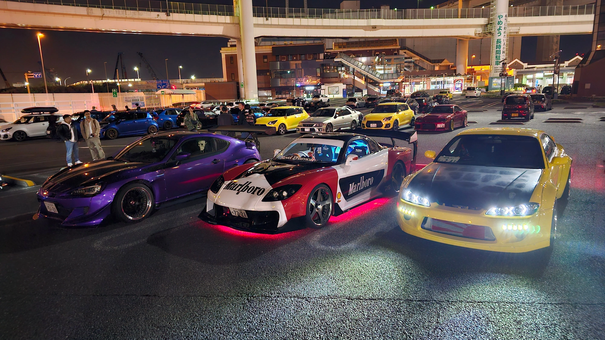

Monte Fuji
Com 3.776 metros de altitude, o Monte Fuji é o ponto mais alto e principal símbolo geográfico e espiritual do Japão. Localizado entre as províncias de Shizuoka e Yamanashi, a melhor época para visualizá-lo com céu limpo é de novembro a março, enquanto sua temporada oficial de escalada ocorre no verão.
 |
Castelo de Osaka
O Castelo de Osaka foi construído em 1583 por Toyotomi Hideyoshi e desempenhou um papel fundamental na unificação do Japão durante o período feudal. Ao longo dos séculos, o castelo foi destruído e reconstruído diversas vezes devido a guerras e incêndios, mas continuou sendo um importante símbolo histórico. Atualmente, é um dos monumentos mais famosos do Japão e representa a força e a história da cidade de Osaka.
 |
Estacionamento Daikoku
O Daikoku Parking Area é um grande estacionamento em Yokohama que se tornou o principal ponto de encontro de carros do Japão. Nas noites de sexta e sábado, reúne diversos veículos esportivos e modificados, como Nissan GT-R, Toyota Supra, Mazda RX-7, Honda NSX e supercarros europeus.
 |